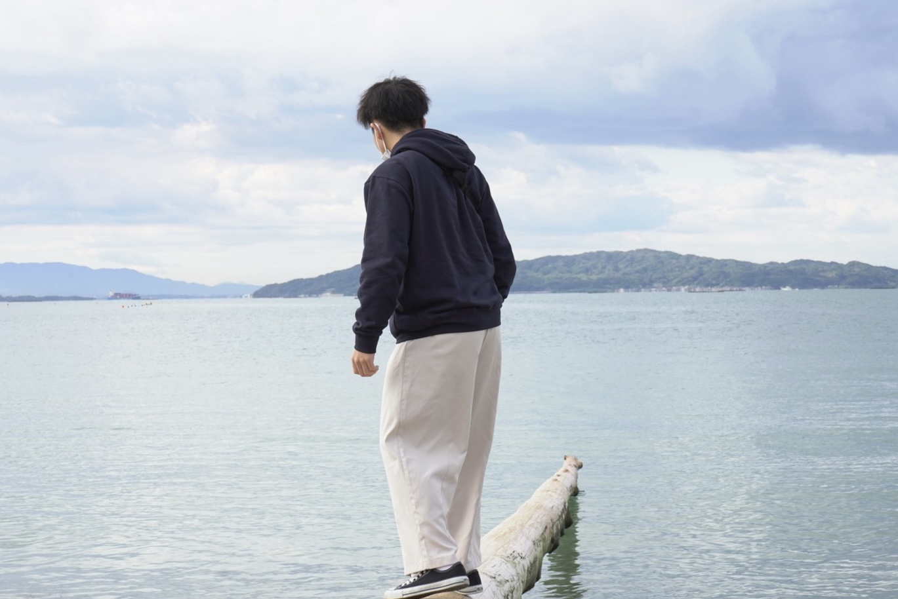

目標は、サービスを利用した人が忘れられないような体験を届ける。
大学生 オカシュンゴ
2000年2月16日生まれ。宮城県刈田郡七ヶ宿町出身。幼少・小学・中学時代を地元で過ごす。高校は隣町にある高校へ通う。
部活動は中高６年間卓球部に所属。大学でも卓球サークルに所属。
現在は「チームで目標を成し遂げたい」、「モノづくりに携われる仕事」、「自分の仕事が社会において、より広い範囲で影響を与えれるもの」を軸に就職活動中。
3つの軸に沿っていることに加え、幼少期からWebエンジニアに興味があったので、エンジニア職は自分にとって天職だと考えている。
今はまだ実力はないが、自分の「目標達成力」を武器にレベルアップ中。
